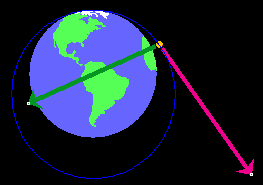
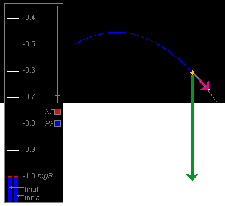
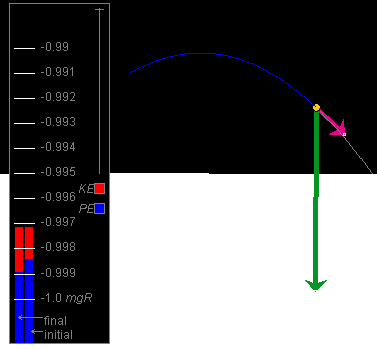

Instructions
This page is designed to get you started using the applet. The applet should be open. The step-by-step instructions on this page are to be done in the applet. You may need to toggle back and forth between instructions and applet if your screen space is limited.
 Observing the Motion and
Energy Changes
Observing the Motion and
Energy Changes
Exercise 1. Prepare the applet for observing the satellite's motion.
 the applet.
the applet.
The magenta velocity vector should be visible. The tail
end of this vector is at the satellite. You can hide or
display the velocity vector by deselecting or selecting
this vector from the Vector panel. To open the Vector
panel, select the Vectors button  .
.
For the time being, keep the velocity vector displayed and also display the gravitational force acting on the satellite by selecting the vector from the Vector panel. The magnitude of this force is the satellite's weight W.
Enter the values x = 0 and y = 10 km in the position data entry fields, and press ENTER. The satellite will be moved to a point just above the north pole (top) of the earth. Drag the Data box out of the way if necessary to see the satellite.
Scale Setting. After Reset, the distance scale is set at 100 pix = 1,000 km. Change the scale setting to 100 pix = 10,000 km by clicking the second radio button to the right of the present one. All distances will now be shown ten times smaller and the velocity vector arrow somewhat smaller as well. In general, the length of the arrow representing the velocity (but not the actual velocity value) is adjusted as the distance scale is changed, but by a smaller factor than the distances or for some scale changes not at all. It is not important to know by what factor the length of the arrow representing the velocity is adjusted.
 to show the
satellite's path when the satellite is in motion.
to show the
satellite's path when the satellite is in motion.
Energy Box. Select the Data button  . This will
cause the Data box and the Energy box to be displayed. Drag
the Data box out of the way or close it.
. This will
cause the Data box and the Energy box to be displayed. Drag
the Data box out of the way or close it.
In the Energy box, the blue portion of the "final" energy bar, representing the potential energy PE, should stop just above the level marked -1.0 mgR. The top end of the "final" energy bar, at the end of the red portion representing the kinetic energy of the satellite (and also the total kinetic energy of the satellite-earth system since the earth is assumed to be at rest), should be a little bit above the level marked -0.4 mgR. Thus, the kinetic energy is equal to a bit more than 0.6 mgR.
Exercise 2. Click PLAY  , and observe the following aspects of
the satellite's motion:
, and observe the following aspects of
the satellite's motion:
Pause  the motion after the satellite has completed a bit more than
one revolution. The orbit should look like that in the
snapshot in Figure 1 below.
the motion after the satellite has completed a bit more than
one revolution. The orbit should look like that in the
snapshot in Figure 1 below.

Figure 1
The satellite's path is somewhat elliptical.
Replay the motion several times, if necessary, and answer the following questions.
Question 1. How does the speed vary during the motion? Where is it largest, where is it smallest?
Question 2. How does the kinetic energy vary during the motion? Where is it largest and where is it smallest?
Question 3. At any moment during the motion, in which direction does the force of gravity point?
Question 4. How does the potential energy vary during the motion? Where is it largest and where is it smallest?
Question 5. How does the mechanical energy of the system, i.e., the sum of kinetic and potential energy, vary during the motion?

Exercise 1. REWIND the applet, and don't change any of the settings used in the previous section. Observe what happens to the energy bar marked "initial" when you press the Initial button .
The "initial" bar should get adjusted so that it represents the current potential and kinetic energies, i.e., it should become identical in appearance to the "final" bar.
Exercise 2. Now PLAY the motion, and observe both the initial and final energy bars.
The "initial" bar should remain unchanged. It shows the potential and kinetic energies at the start of the motion. However, the final bar will show how the potential and kinetic energies change during the motion.
In this section, you will observe different motions at different settings of the distance and energy scales.
Exercise 1. RESET the applet. Change the distance scale to the most zoomed-in setting "100 pix = 10 km", display the velocity vector, and set the initial position and velocity to
 (x,y)(0) = (0, 10) km
(x,y)(0) = (0, 10) km
 v = 400 m/s,
v = 400 m/s,  θ = 30o .
θ = 30o .
Press the Data button, and drag the Data box out of the way so that only the Energy box remains visible.
Press the Initial button, select the Trace button, PLAY the motion, and PAUSE it. You should see energy bars like those in Figure 2 below, no matter where you pause the motion.

Figure 2
The potential energy PE is very close to -1.0 mgR, and the kinetic energy very close to 0 on the given energy display scale. Variations in potential and kinetic energy during the motion appear minute on this scale.
Exercise 2. Click REWIND, and drag the Zoom slider in the Energy box as high up as possible. That will expand the energy region around the level -1.0 mgR as much as possible.
PLAY the motion, and PAUSE somewhere near the previous Pause point. You should see something like the snapshot in Figure 3 below.

Figure 3
The enlarged energy bar shows that the mechanical energy is close to -0.997 mgR. At the previous energy scale, this value was too close to -1.0 mgR to be distinguishable from -1.0 mgR. At the present energy scale, it also can be seen clearly that both the potential energy and the kinetic energy are changing during the motion. Replay the motion to observe these changes again.
Question 1. Are the changes in potential and kinetic energy that you can observe for this projectile motion consistent qualitatively with those observed for the earlier satellite motion? Does the potential energy increase and the kinetic energy decrease as the projectile gains elevation?
Exercise 3. RESET the applet. Set the distance scale to the most zoomed-out setting: 100 pix = 100,000 km. Select the Data button and drag the Data box off to one side, but keep the Energy box in view. Set the initial position and velocity to
 (x,y)(0) = (0, 50,000) km ,
(x,y)(0) = (0, 50,000) km ,
 v = 1,00 m/s,
v = 1,00 m/s,  θ = 0o .
θ = 0o .
You should find that the potential energy bar in the "final" column extends beyond the top of the window. Drag the Zoom slider in the Energy box downward until the energy level 0.0 mgR and the top of the "final" energy column come into view.
The top of the "final" energy column should be very near -0.1 mgR.
Exercise 4. Keeping all settings as at the end of Exercise 3, press the Initial button, Select the Trace button, and PLAY the motion. Observe the changes in potential and kinetic energy.
The motion will be slow at first. PAUSE it at some point. You might see something like the snapshot in Figure 4 below.

Figure 4
At the moment shown in Figure 4, the potential energy has decreased and the speed and kinetic energy have increased considerably compared with the initial moment.
Click PLAY again, and watch the motion until the satellite crashes into the earth. The initial speed of the satellite was not large enough to carry the satellite around the earth.
At the moment of the crash, the potential energy should be equal to -1.0 mgR, which is its value when the satellite is at the surface of the earth.